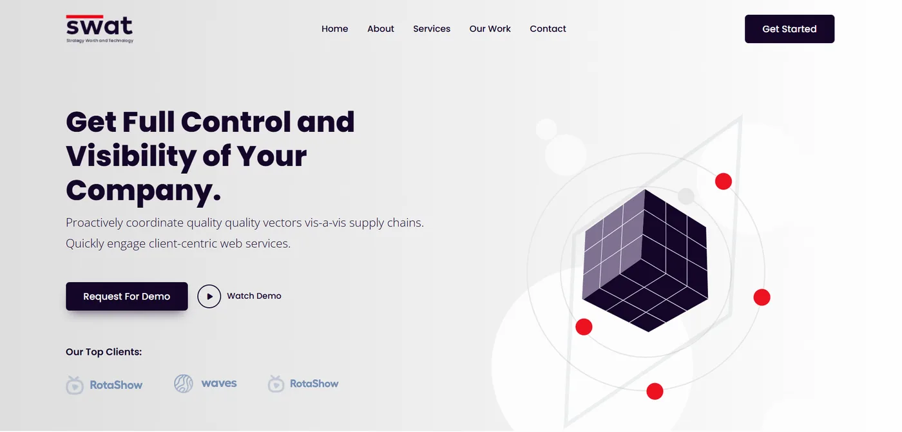

Public website
Public websiteRELEC Media ↗
An editorial platform bringing stories, culture, history and community into one connected reading experience.
Strategy meets the interface
Websites with a distinct point of view—and a clear path for the people using them.
Explore the websites ↓
Recent website work
Different audiences, different purposes. Each website translates its identity into a way of exploring.
Public websiteAn editorial platform bringing stories, culture, history and community into one connected reading experience.
Storefront / proposal projectAn editorial commerce experience shaped around material, identity and the art of giving.
 In development
In developmentA corporate website that makes an ecosystem feel connected without flattening the identity of each company.
Earlier foundations
SWAT Technology remains part of the journey: a collaborative frontend learning project based on the Quiety theme.
Explore the early project ↗
Have something in mind?
Tell me what you’re building, who it’s for and where you need a creative hand.
Start a conversation